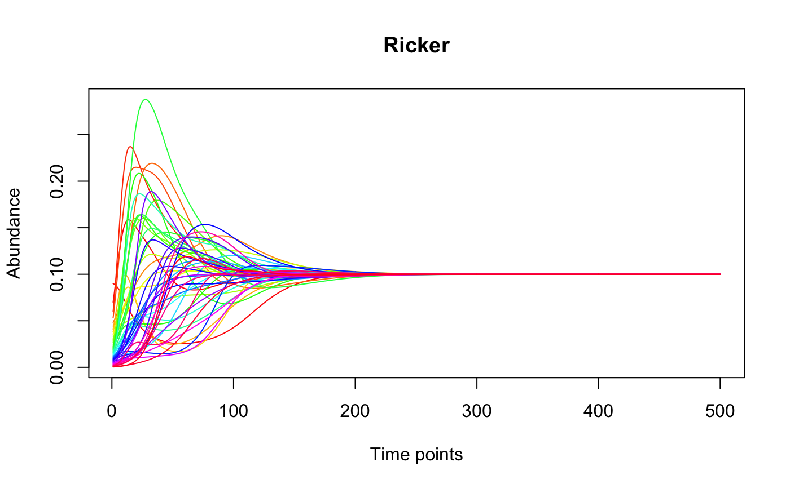
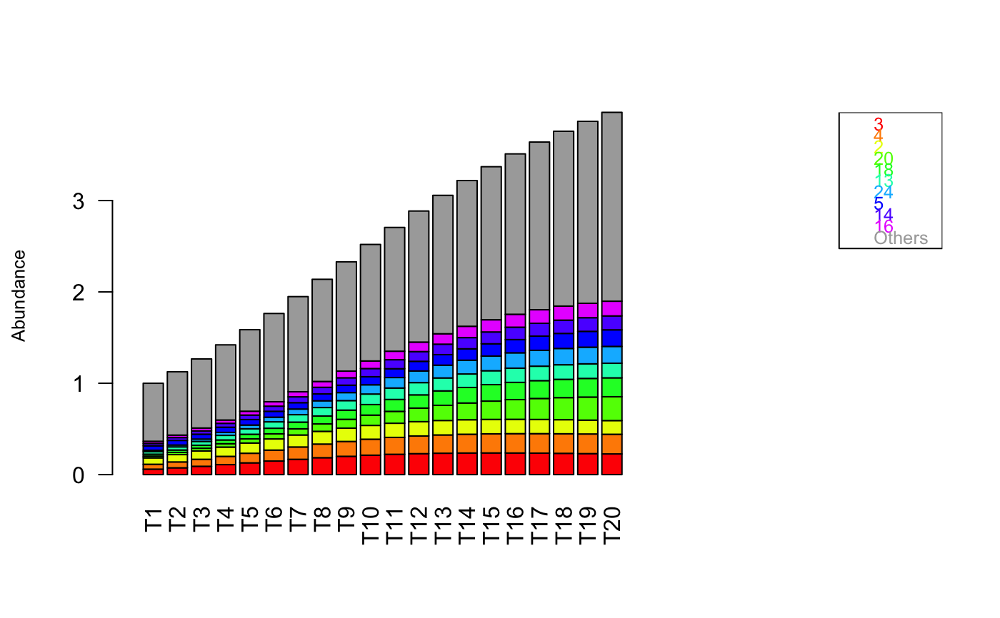
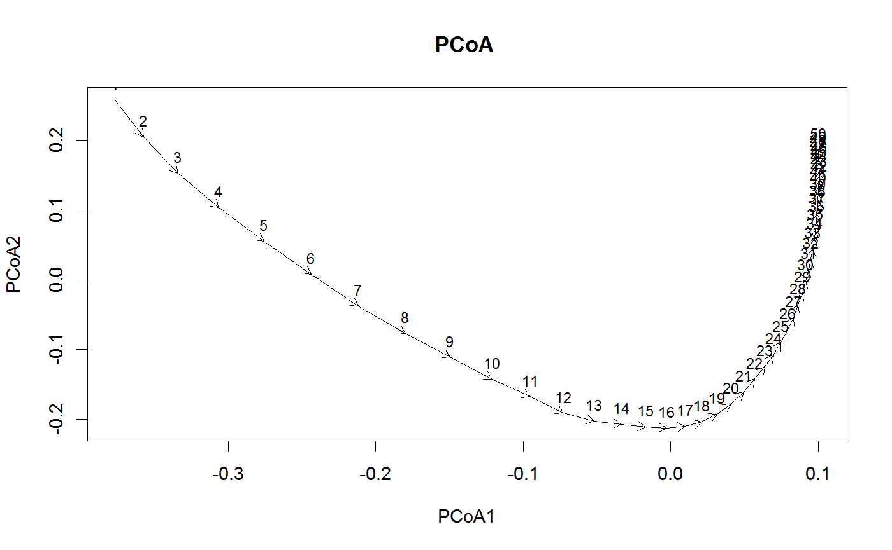

Plot the time series row-wise.
tsplot(x, time.given = FALSE, num = nrow(x), sample.points = c(), mode = "lines", dist = "bray", my.color.map = list(), identifyPoints = FALSE, topN = 10, groups = c(), hideGroups = c(), legend = FALSE, labels = c(), noLabels = FALSE, centroid = FALSE, perturb = NULL, ...)
| x | the matrix of time series |
|---|---|
| time.given | if true, then the column names are supposed to hold the time units |
| num | the number of rows to plot (starting from the first row) |
| sample.points | indicate sample points (only for lines) |
| mode | lines (default), pcoa (a PCoA plot with arrows showing the community trajectory) or bars (a stacked barplot for each sample) |
| dist | the distance to use for the PCoA plot |
| my.color.map | map of taxon-specific colors, should match row names (only for bars) or group names (only for lines) |
| identifyPoints | click at points in the PCoA plot to identify them (using function identify), not active when noLabels is TRUE |
| topN | number of top taxa to be plotted for mode bars |
| groups | group membership vector; for mode bars and pcoa refers to samples; for mode lines refers to taxa; there are as many entries in the group membership vector as samples or taxa; taxa/samples are assumed to be ordered by groups |
| hideGroups | compute PCoA with all data, but do not show members of selected groups; expects one integer/name per group and consistency with groups parameter, only supported for mode pcoa |
| legend | add a legend |
| labels | use the provided labels in the PCoA plot |
| noLabels | do not use any labels in the PCoA plot |
| centroid | draw PCoA plot with a centroid (groups are ignored) |
| perturb | a perturbation object (adds polygons in mode lines highlighting the perturbation periods, colors labels in mode bars and colors dots in the PCoA plot) |
| \dots | Additional arguments passed to plot() |
#> [1] "Adjusting connectance to 0.1" #> [1] "Initial edge number 2500" #> [1] "Initial connectance 1" #> [1] "Number of edges removed 2205" #> [1] "Final connectance 0.1" #> [1] "Final connectance: 0.1" #> [1] "Initial edge number 295" #> [1] "Initial connectance 0.1" #> [1] "Number of negative edges already present: 185" #> [1] "Converting 22 edges into negative edges" #> [1] "Final connectance: 0.1"out.ricker=ricker(N,A=A,y=generateAbundances(N,mode=5,prob=TRUE),K=rep(0.1,N), sigma=-1,tend=500) tsplot(out.ricker, main="Ricker")tsplot(out.ricker[,1:20],mode="bars",legend=TRUE)tsplot(out.ricker[,1:50],mode="pcoa")#> [1] "First five eigen values:" #> [1] "2.03892501264245, 0.272922475081848, 0.0573590320318805, 0.00687910077225481, 0.00633747212443412"